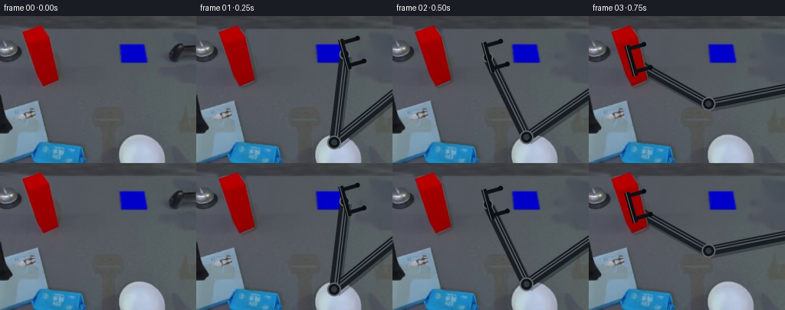
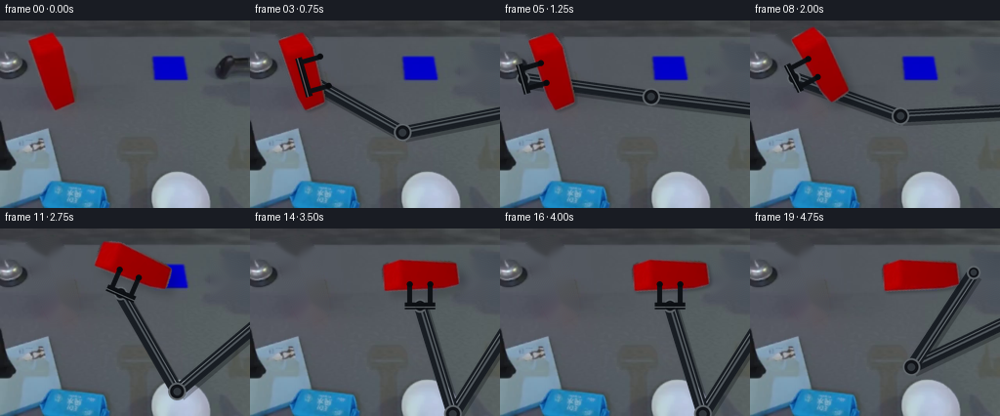
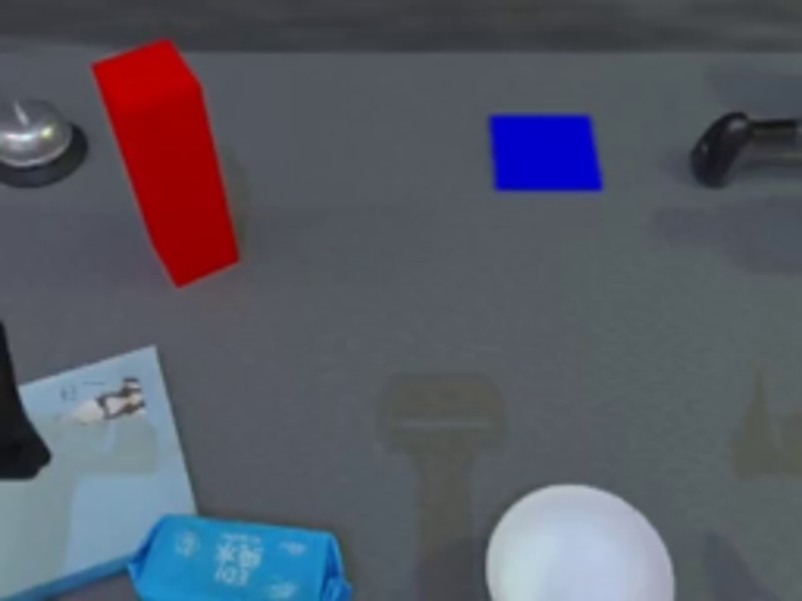
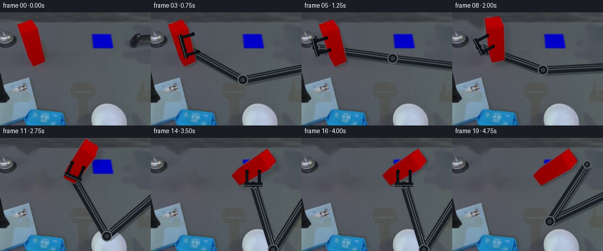
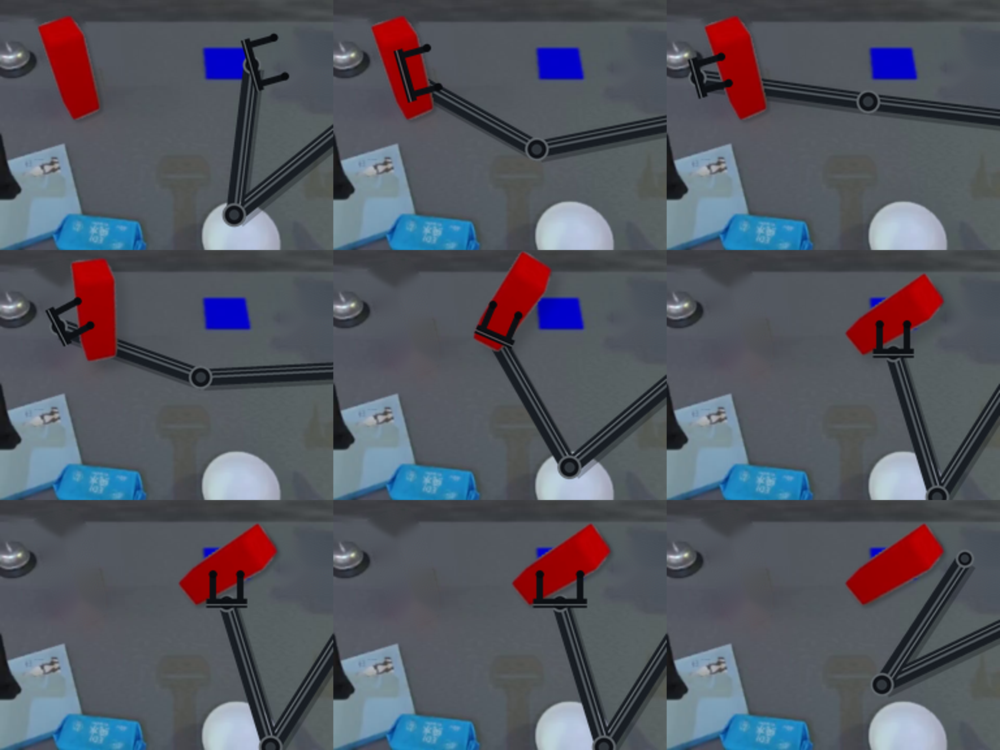
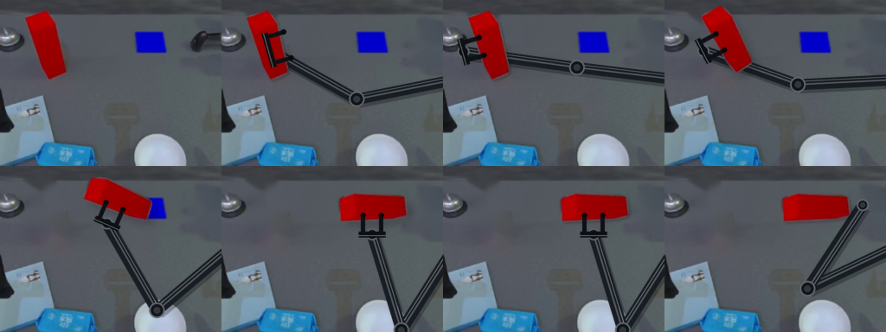

CODING AGENTS AS PIXEL WORLD MODELS
traex/GPT-5.6-Sol · common50_0045
点击播放 · 原生 RGB 像素
逐轮保存的候选
回放视频、检查图与代码变化。
每份候选均可单独播放。实际图片检查记录在下方工具轨迹中。
候选 01播放与检查图
点击播放 · 原生 RGB 像素


展开代码变化
--- 上一保存版本
+++ 本次保存版本
@@ -0,0 +1,225 @@
+"""Deterministic image-space pick-and-place animation for this case.
+
+The camera/background are kept fixed. The red cuboid is extracted from the
+given image and always moved by one rigid affine transform. A two-link arm is
+drawn with fixed-length links and an inverse-kinematic elbow, so its motion is
+articulated rather than rubbery.
+"""
+from pathlib import Path
+import math
+
+import cv2
+import numpy as np
+from PIL import Image, ImageDraw
+
+import artifact_io
+
+
+ROOT = Path(__file__).resolve().parent
+W, H = 256, 192
+SS = 4
+
+
+def smoothstep(x):
+ x = max(0.0, min(1.0, float(x)))
+ return x * x * (3.0 - 2.0 * x)
+
+
+def rgba_over(base, rgb, alpha):
+ a = np.clip(alpha.astype(np.float32) / 255.0, 0, 1)[..., None]
+ return np.clip(base.astype(np.float32) * (1-a) + rgb.astype(np.float32) * a,
+ 0, 255).astype(np.uint8)
+
+
+def line_poly(p0, p1, halfwidth):
+ x0, y0 = p0; x1, y1 = p1
+ dx, dy = x1-x0, y1-y0
+ d = max(1e-6, math.hypot(dx, dy))
+ nx, ny = -dy/d*halfwidth, dx/d*halfwidth
+ return [(x0+nx,y0+ny), (x1+nx,y1+ny),
+ (x1-nx,y1-ny), (x0-nx,y0-ny)]
+
+
+def S(p):
+ return tuple(int(round(v*SS)) for v in p)
+
+
+def draw_arm(frame, wrist, open_amount, object_angle, draw_fingers=False,
+ draw_links=True):
+ """Render fixed-length graphite arm beneath, and optional jaws above."""
+ # Supersampled transparent paint layer gives stable antialiasing.
+ layer = Image.new("RGBA", (W*SS, H*SS), (0,0,0,0))
+ d = ImageDraw.Draw(layer)
+ if draw_links:
+ shoulder = np.array((270.0, 92.0))
+ end = np.array(wrist, dtype=float)
+ v = end - shoulder
+ dist = float(np.linalg.norm(v))
+ # Two physically rigid, equal 116 px links; reachable points are clamped
+ # only outside the frame, never causing a visible stretch.
+ L = 116.0
+ dist2 = min(2*L-0.01, max(15.0, dist))
+ u = v / max(dist, 1e-6)
+ mid = shoulder + u*(dist2/2)
+ perp = np.array((-u[1], u[0]))
+ h = math.sqrt(max(0.0, L*L-(dist2/2)**2))
+ elbow = mid - perp*h # upper-elbow IK branch
+
+ # Link shadows, thick housings, edge bevels and narrow specular strips.
+ for a,b in ((shoulder, elbow), (elbow, end)):
+ d.polygon([S(p) for p in line_poly(a+(2,3), b+(2,3), 7.2)],
+ fill=(5,7,10,70))
+ for a,b in ((shoulder, elbow), (elbow, end)):
+ d.polygon([S(p) for p in line_poly(a,b,6.4)], fill=(24,29,35,255))
+ d.line([S(a),S(b)], fill=(78,85,91,255), width=2*SS)
+ # Highlight offset to one edge.
+ vv=b-a; ll=max(1,np.linalg.norm(vv)); nn=np.array((-vv[1],vv[0]))/ll
+ d.line([S(a+nn*3.5),S(b+nn*3.5)], fill=(112,119,123,155), width=SS)
+ for p,r in ((shoulder,10.5),(elbow,9.0),(end,7.0)):
+ d.ellipse((int((p[0]-r)*SS),int((p[1]-r)*SS),
+ int((p[0]+r)*SS),int((p[1]+r)*SS)),
+ fill=(17,20,25,255), outline=(91,97,102,255), width=2*SS)
+ rr=r*.43
+ d.ellipse((int((p[0]-rr)*SS),int((p[1]-rr)*SS),
+ int((p[0]+rr)*SS),int((p[1]+rr)*SS)), fill=(48,54,60,255))
+
+ arm = np.asarray(layer.resize((W,H), Image.Resampling.LANCZOS))
+ out = rgba_over(frame, arm[...,:3], arm[...,3])
+ if not draw_fingers:
+ return out
+
+ # Separate top layer for the parallel gripper. Jaws maintain constant
+ # dimensions and only translate apart while open.
+ layer = Image.new("RGBA", (W*SS,H*SS), (0,0,0,0))
+ d = ImageDraw.Draw(layer)
+ c = np.array(wrist, float)
+ axis = np.array((math.cos(object_angle), math.sin(object_angle)))
+ inward = np.array((-math.sin(object_angle), math.cos(object_angle)))
+ # wrist lies on +inward side, therefore jaw fingers run toward -inward.
+ sep = 10.5 + 5.0*open_amount
+ palm0, palm1 = c-axis*(sep+5), c+axis*(sep+5)
+ d.line([S(palm0),S(palm1)], fill=(12,15,19,255), width=7*SS)
+ d.line([S(palm0+inward*1.2),S(palm1+inward*1.2)],
+ fill=(105,111,115,220), width=SS)
+ for sign in (-1,1):
+ root = c + axis*(sign*sep)
+ tip = root - inward*22
+ d.line([S(root),S(tip)], fill=(13,16,20,255), width=5*SS)
+ d.ellipse((int((tip[0]-3)*SS),int((tip[1]-3)*SS),
+ int((tip[0]+3)*SS),int((tip[1]+3)*SS)), fill=(8,10,13,255))
+ grip=np.asarray(layer.resize((W,H),Image.Resampling.LANCZOS))
+ return rgba_over(out,grip[...,:3],grip[...,3])
+
+
+def main():
+ src = np.asarray(Image.open(ROOT/'first_frame.png').convert('RGB'))
+ b,g,r = cv2.split(src) # variable names are irrelevant; src is RGB
+ # RGB red segmentation, limited to the known left work area.
+ R,G,B = src[...,0],src[...,1],src[...,2]
+ red = ((R > 82) & (R > G*1.32) & (R > B*1.40)).astype(np.uint8)*255
+ red[:,100:] = 0; red[110:,:] = 0
+ n, labels, stats, _ = cv2.connectedComponentsWithStats(red)
+ keep = 1 + int(np.argmax(stats[1:,cv2.CC_STAT_AREA]))
+ core = np.where(labels==keep,255,0).astype(np.uint8)
+ # Convex silhouette fills low-saturation highlights while retaining the
+ # observed cuboid outline.
+ contours,_=cv2.findContours(core,cv2.RETR_EXTERNAL,cv2.CHAIN_APPROX_SIMPLE)
+ silhouette=np.zeros_like(core)
+ cv2.fillConvexPoly(silhouette,cv2.convexHull(contours[0]),255)
+ alpha=cv2.GaussianBlur(silhouette,(3,3),0.45)
+
+ # Remove source block and the original parked black wrist from the clean
+ # plate. Inpainting samples only this same fixed camera image.
+ erase=cv2.dilate(silhouette,np.ones((9,9),np.uint8))
+ cv2.rectangle(erase,(215,31),(255,72),255,-1)
+ plate=cv2.inpaint(src,erase,5,cv2.INPAINT_TELEA)
+
+ source_center=np.array((52.5,51.5),float)
+ target_center=np.array((174.0,49.0),float)
+ initial_angle=math.radians(74.0) # long axis in image coordinates
+ final_angle=0.0 # aligned to the horizontal blue pad
+
+ frames=[]
+ for i in range(20):
+ if i==0:
+ frames.append(src.copy())
+ continue
+ # Pick/carry/place timing.
+ if i <= 6:
+ travel=0.0
+ elif i <= 14:
+ travel=smoothstep((i-6)/8.0)
+ else:
+ travel=1.0
+ center=source_center*(1-travel)+target_center*travel
+ # A modest upward image arc conveys clearance over the table.
+ center[1] -= math.sin(math.pi*travel)*13.0
+ angle=initial_angle*(1-travel)+final_angle*travel
+ rotation=math.degrees(angle-initial_angle)
+
+ # Height signal controls contact shadow; geometry itself stays rigid.
+ if i < 6: lift=0.0
+ elif i < 8: lift=smoothstep((i-5)/2.0)
+ elif i < 15: lift=1.0
+ elif i < 17: lift=1-smoothstep((i-14)/2.0)
+ else: lift=0.0
+
+ axis=np.array((math.cos(angle),math.sin(angle)))
+ inward=np.array((-math.sin(angle),math.cos(angle)))
+ desired_wrist=center+inward*30.0
+ start_wrist=np.array((225.0,48.0))
+ if i <= 4:
+ approach=smoothstep(i/4.0)
+ wrist=start_wrist*(1-approach)+desired_wrist*approach
+ attached=False
+ elif i <= 17:
+ wrist=desired_wrist
+ attached=True
+ else:
+ q=smoothstep((i-17)/2.0)
+ wrist=desired_wrist*(1-q)+np.array((229.0,45.0))*q
+ attached=False
+
+ # Arm is behind the held object.
+ frame=plate.copy()
+ frame=draw_arm(frame,wrist,
+ open_amount=(1.0 if i<=4 or i>=17 else 0.0),
+ object_angle=angle,draw_fingers=False)
+
+ # Rigid affine warp of both source texture and silhouette.
+ M=cv2.getRotationMatrix2D(tuple(source_center),rotation,1.0)
+ mapped=M[:,:2]@source_center+M[:,2]
+ M[:,2]+=center-mapped
+ obj=cv2.warpAffine(src,M,(W,H),flags=cv2.INTER_CUBIC,
+ borderMode=cv2.BORDER_REFLECT)
+ am=cv2.warpAffine(alpha,M,(W,H),flags=cv2.INTER_LINEAR,
+ borderMode=cv2.BORDER_CONSTANT,borderValue=0)
+ # Soft contact/carry shadow moves coherently, becoming more diffuse
+ # when lifted and tight again on the destination pad.
+ sh_off=(int(round(2+lift*5)),int(round(2+lift*5)))
+ SM=np.float32([[1,0,sh_off[0]],[0,1,sh_off[1]]])
+ shadow=cv2.warpAffine(am,SM,(W,H),borderValue=0)
+ sigma=1.2+lift*2.2
+ shadow=cv2.GaussianBlur(shadow,(0,0),sigma)*(.21-.07*lift)
+ black=np.zeros_like(frame)
+ frame=rgba_over(frame,black,shadow.astype(np.uint8))
+ frame=rgba_over(frame,obj,am)
+
+ # Gripper stays visible above the object while approaching/holding;
+ # it opens and withdraws only after the block is resting on the pad.
+ show_grip=i<=18
+ if show_grip:
+ frame=draw_arm(frame,wrist,
+ open_amount=(1.0 if i<=4 or i>=17 else 0.0),
+ object_angle=angle,draw_fingers=True,
+ draw_links=False)
+ frames.append(frame)
+
+ arr=np.stack(frames).astype(np.uint8)
+ # Contract invariant: exact source bytes in the first frame.
+ assert np.array_equal(arr[0],src)
+ artifact_io.save(arr,ROOT)
+
+
+if __name__=='__main__':
+ main()
候选 02播放与检查图
点击播放 · 原生 RGB 像素

展开代码变化
--- 上一保存版本
+++ 本次保存版本
@@ -155,7 +155,9 @@
# A modest upward image arc conveys clearance over the table.
center[1] -= math.sin(math.pi*travel)*13.0
angle=initial_angle*(1-travel)+final_angle*travel
- rotation=math.degrees(angle-initial_angle)
+ # OpenCV's positive image rotation turns the visible major axis toward
+ # horizontal (its image-y convention is opposite the math convention).
+ rotation=math.degrees(initial_angle-angle)
# Height signal controls contact shadow; geometry itself stays rigid.
if i < 6: lift=0.0
可观测工具轨迹
实际执行的命令与返回图片。
命令 1exit 0
/bin/bash -lc "cat prompt.txt && printf '\\n---RULES---\\n' && cat GENERATION_RULES.md"
命令 2exit 0
/bin/bash -lc "find . -maxdepth 2 -type f -printf '%p %s bytes\\n' | sort"
命令 3exit 0
/bin/bash -lc "python3 - <<'PY'
from PIL import Image
im=Image.open('first_frame.png')
print(im.size,im.mode)
PY
ffmpeg -version | head -n 3"命令 4exit 0
/bin/bash -lc "cat task_spec.json; sed -n '1,240p' artifact_io.py"
命令 5exit 0
/bin/bash -lc "python3 - <<'PY'
from PIL import Image
im=Image.open('first_frame.png')
# upscale nearest and regular
im.resize((1024,768)).save('.tmp/up.png')
print('saved')
PY"命令 6exit 0
/bin/bash -lc "python3 - <<'PY'
import numpy as np
from PIL import Image
im=np.array(Image.open('first_frame.png'))
r,g,b=im.transpose(2,0,1)
m=(r>80)&(r>g*1.35)&(r>b*1.4)&(np.indices(r.shape)[1]<100)&(np.indices(r.shape)[0]<110)
ys,xs=np.where(m)
print(xs.min(),xs.max(),ys.min(),ys.max(),len(xs))
for y in range(10,100,5):
x=np.where(m[y])[0]
if len(x): print(y,x.min(),x.max(),len(x))
PY"命令 7exit 0
/bin/bash -lc "python3 - <<'PY'
try:
import cv2; print('cv2',cv2.__version__)
except Exception as e: print(e)
PY"命令 8exit 0
/bin/bash -lc "python3 generate.py && python3 - <<'PY'
import numpy as np
from PIL import Image
z=np.load('pixels.npz')['pixels']
a=np.array(Image.open('first_frame.png'))
p=((z[:,:,0]>>16)&255).astype('uint8')
q=((z[:,:,0]>>8)&255).astype('uint8')
r=(z[:,:,0]&255).astype('uint8')
out=np.stack([p,q,r],-1)
print('tensor',z.shape,z.dtype,'first exact',np.array_equal(out,a))
print('frames',len(list(__import__('pathlib').Path('frames').glob('*.png'))))
PY"命令 9exit 0
/bin/bash -lc 'python3 -m py_compile generate.py && du -h pixels.npz index.html inspection.png'
命令 10exit 0
/bin/bash -lc "python3 - <<'PY'
from PIL import Image
ims=[Image.open(f'frames/{i:02d}.png').resize((768,576)) for i in [1,3,5,8,11,14,16,17,19]]
out=Image.new('RGB',(768*3,576*3))
for j,im in enumerate(ims):out.paste(im,((j%3)*768,(j//3)*576))
out.save('.tmp/key.png')
PY"命令 11exit 0
/bin/bash -lc "python3 - <<'PY'
import cv2,numpy as np
from PIL import Image
for i in [0,8,11,14,16,19]:
a=np.array(Image.open(f'frames/{i:02d}.png'))
m=(a[:,:,0]>120)&(a[:,:,0]>a[:,:,1]*1.5)&(a[:,:,0]>a[:,:,2]*1.5)
y,x=np.where(m)
C=np.cov(np.stack([x,y])); v=np.linalg.eigh(C)[1][:,-1]
print(i, np.degrees(np.arctan2(v[1],v[0])), (x.min(),x.max(),y.min(),y.max()),len(x))
PY"命令 12exit 0
/bin/bash -lc "python3 - <<'PY'
import cv2,numpy as np
from PIL import Image
src=np.array(Image.open('first_frame.png')); c=(52.5,51.5)
for deg in [-74,74]:
M=cv2.getRotationMatrix2D(c,deg,1); o=cv2.warpAffine(src,M,(256,192));
m=(o[:,:,0]>120)&(o[:,:,0]>o[:,:,1]*1.5)&(o[:,:,0]>o[:,:,2]*1.5)
y,x=np.where(m);v=np.linalg.eigh(np.cov([x,y]))[1][:,-1]
print(deg,np.degrees(np.arctan2(v[1],v[0])))
PY"命令 13exit 0
/bin/bash -lc "python3 generate.py && python3 - <<'PY'
from PIL import Image
ims=[Image.open(f'frames/{i:02d}.png').resize((512,384)) for i in [0,3,5,8,11,14,16,19]]
out=Image.new('RGB',(2048,768))
for j,im in enumerate(ims):out.paste(im,((j%4)*512,(j//4)*384))
out.save('.tmp/finalcheck.png')
PY"视觉工具实际返回图片 1

视觉工具实际返回图片 2

视觉工具实际返回图片 3

视觉工具实际返回图片 4

保存候选 2 份；完成命令 13 次；可验证图片返回 4 张。原始 API 响应与完整日志保留在本地。